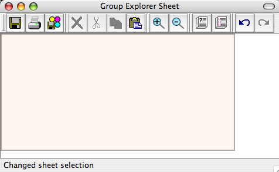
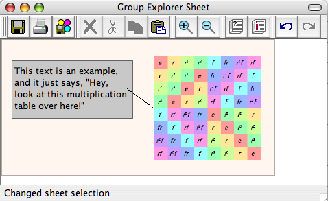

This page describes how to interact with sheets in Group Explorer. If you are unsure what sheets are, read the description here. A blank sheet window looks something like the following picture.

Let us consider all the things one can do with a sheet, grouping them categorically.
A blank sheet is shown as a faintly peach/pink region, the rectangle in the center of the window pictured above. In this region you can add various kinds of "sheet items." Here is an image of a window containing a sheet with four items: a multiplication table, some text, a gray background rectangle, and a connecting line.

If you wish to experiment with a sheet without creating one, there are links in each group's Group Info window that will create sheets for you (e.g. "Show me all the views connected together in a sheet" link in the Views section).
Note that resizing the window containing the sheet does not resize the sheet. In order to resize the sheet itself (the pinkish region on which you can place items), you will need to use the Resize item on the Sheet menu (refer to the Toolbars and menus section, below). If the sheet is too large to be seen in the window (unlike those pictured above), scrollbars will appear on the right and bottom of the window to help you navigate it. Furthermore, you can choose at what magnification level you view the sheet by clicking the zoom in or out
or out buttons on the toolbar, or using the corresponding menu items.
buttons on the toolbar, or using the corresponding menu items.
When your mouse passes over an item on the sheet, four green corners will appear around it to indicate the item has noticed that it is under your mouse. This is most useful if you have several items near one another, or even one on top of the other. To select the item that is advertising itself as being under your mouse cursor, simply click. A pink border will appear around the item.
Note that for nonrectangular items (lines and homomorphisms) the area of their sensitivity to the mouse (and thus the area enclosed by the green corners or the pink outline) may be fairly large, to give you ample opportunity to click them without having to click exactly on a line.
To select more than one item on a sheet, hold down the shift button while you click items after the first. You can then move, delete, cut, or copy all of these items at once.
To move an item from one place to another on the sheet, simply drag it. To move an item forward or backwards on the sheet (i.e. farther into the background, or closer to the foreground), right-click on the item and choose Push backward or  Bring forward from the menu that shows up.
Bring forward from the menu that shows up.
You can resize an item by first selecting it, and then hovering your mouse over any part of its boundary. Your mouse cursor will shape itself like a pair of arrows to indicate that resizing is possible. Click and drag to resize the item.
The following commands appear in the menubar for the sheet window, and are organized here by the menus in which they appear. Many of these items also appear on the toolbar for the window, and you will recognize them by the icons below. Furthermore, right-clicking on the sheet (or an item therein) will bring up the set of these actions which are relevant to the item on which you clicked (if any).
If you have not saved the sheet before, this will bring up a standard save dialog box for you to choose the filename under which you will save the sheet. If you have saved the sheet before, this will save it under the same name without asking.
Sheet files are XML documents. If you do not add the extension .sheet to your filename, it will be added for you.
Same as Save, above, but it always asks you for the filename, even if you have saved the sheet before.
Brings up a printing dialog that allows you to preview how the sheet will look on the printed page.

Group Explorer has a tutorial on saving and printing images.
To choose a different page layout or orientation, click the "Page setup" button. To cancel printing, click the "Cancel" button. To resize the sheet on the page, use the boxes for choosing size, either in pixels or inches. Margins can also be edited directly (in inches only). When the settings are as you would like them, click the "OK" button, and the usual print dialog box for your platform will appear, so that you can select a printer, print quality, etc.
A sheet can be saved as a single Portable Network Graphics (PNG) file. When you use this menu item (or toolbar button), a dialog much like the Print dialog (shown above) appears. It allows you to choose the size the image will be on disk (using absolute pixels or relative percentages) and the lossiness/compression used.

Group Explorer has a tutorial on saving and printing images.
Canceling will return you to Group Explorer without taking any action. Clicking OK will bring up a save dialog so that you can choose a filename to save under. If you do not add the extension .png yourself, it will be added for you.
This removes from the sheet all selected items. The only way to get them back is to use Undo.
Note that if you delete an item that is connected to another item via a connecting line or morphism, the connection(s) will also be deleted.
This removes from the sheet all selected items, but adds them to the clipboard so that they can be pasted elsewhere, in the same sheet or a different one.
Note that if you cut an item that is connected to another item via a connecting line or morphism, the connection(s) will also be deleted. Such connections will only be added to the clipboard if both of their endpoints were in the selection that was cut. This is because it does not make sense to paste a connector with only one of its endpoints.
Works just like Cut, except does not remove the items from the sheet.
If the contents of the clipboard are sheet items that have been cut or copied from this sheet or another one inside Group Explorer, it pastes those sheet items into this sheet at the same position they were when they were cut or copied.
Warnings: If you execute copy and then paste in immediate succession, you will stack two items one on top of the other, and must move the foremost one in order to be able to see both. If you cut items from a large sheet and paste them into a small sheet, they may end up off the edge of the sheet, and therefore not visible to you. Take care.
Increases the magnification with which you are viewing the sheet.
Decreases the magnification with which you are viewing the sheet.
Undoes the last action taken on the sheet. Note that hovering your mouse over this button will insert into the status bar (at the bottom of the sheet window) a description of what you would undo if you clicked the button.
One important anomaly regarding Undo /Redo
/Redo functionality in sheets is that it does not apply to changes made in a large visualizer window. That is, if you have a visualizer in a sheet, you double-click it to open its large version, and make changes, and close the sheet, then you cannot undo those changes by using the Undo
functionality in sheets is that it does not apply to changes made in a large visualizer window. That is, if you have a visualizer in a sheet, you double-click it to open its large version, and make changes, and close the sheet, then you cannot undo those changes by using the Undo button on the sheet window. Instead, you need to open the large visualizer window again and use its Undo
button on the sheet window. Instead, you need to open the large visualizer window again and use its Undo functionality.
functionality.
Redoes the last action undone on the sheet. Note that hovering your mouse over this button will insert into the status bar (at the bottom of the sheet window) a description of what you would redo if you clicked the button.
Note also the important anomaly regarding Undo and Redo
and Redo and visualizers embedded in sheets. See the note under Undo
and visualizers embedded in sheets. See the note under Undo , immediately above.
, immediately above.
Brings up a dialog box into which you can enter a width and a height for the sheet. Note that this refers to the pinkish region inside the sheet window, not the window itself. You can easily resize the window without resizing the sheet just by dragging the edges of the window like any other window on your system.
Creates a new text box with dummy text, located near the top left of your view of the sheet. To edit the text, see below.
This action is only available if a text box is selected. It increases the font size of the text in the box.
This action is only available if a text box is selected. It decreases the font size of the text in the box.
This action inserts a gray rectangle near the top left of your view of the sheet. The rectangle will be slightly more into the background than items in the sheet tend to be by default, which is convenient for placing it behind items as a cue for visual grouping of related sheet items.
Initiating this action causes the cursor of the sheet to change to a plus (+) and enters a mode where the next two sheet items you select will be connected by a connecting line. Note the status bar of the window at this time. One of the following three phrases will be present in the status bar, letting you know what you are doing:
You can press Escape at any time during this process to cancel the connecting line.
This brings up a dialog from which you must choose first a group (from a list of all groups loaded) and then a visualizer (from a list of all visualizers available for that group). When you have done each of these things and clicked OK, the visualizer you have chosen will be inserted near the top left of your view of the sheet. To edit the properties of the visualizer, see below.
Upon executing this command, you will be prompted for the name of the morphism. A sensible default (like f or g) will be suggested, keeping in mind that you cannot use a name that is already in use by a morphism in the current sheet. Once you have chosen this, you must connect two visualizers just as if you were introducing a connecting line (see above). An important difference between morphisms and connecting lines is that morphisms must connect visualizers, not just any two sheet items.
The zero morphism is always created (i.e. the morphism mapping every element to the identity). To change the map, see below.
Sheet items can be on top of one another, and to determine which one appears in the foreground, you are able to move items forward (closer to the viewer, as with this command) or backward (deeper into the screen, as with the following command).
Sheet items can be on top of one another, and to determine which one appears in the foreground, you are able to move items forward (closer to the viewer, as with the previous command) or backward (deeper into the screen, as with this command).
Opens help at the table of contents for the User Manual.
Opens help at the table of contents for the Tutorials.
Opens help to this page.
The "What's this?" button appears on the toolbar of the main window, and has its own separate help page here.
To edit any sheet item, simply double click it.
For text items, this brings up a dialog in which you can edit the current text. The dialog is very straightforward, with a box in which to type, and OK and Cancel buttons. Note that only plain text is allowed.
For visualizers, this brings up a large view of the visualizer which you can customize to a great level of detail, and the changes will be reflected in the image shown in the sheet. To read more on this topic, refer to the documentation for large visualizers.
For morphisms, this brings up a dialog allowing you to change the map, and change how the morphism is viewed. To read more on this topic, refer to the documentation for the morphism editing dialog box.
Quick help links:
Contents | Getting Started | Tutorials | User Manual | Miscellaneous Reference
GE terminology | Help on help